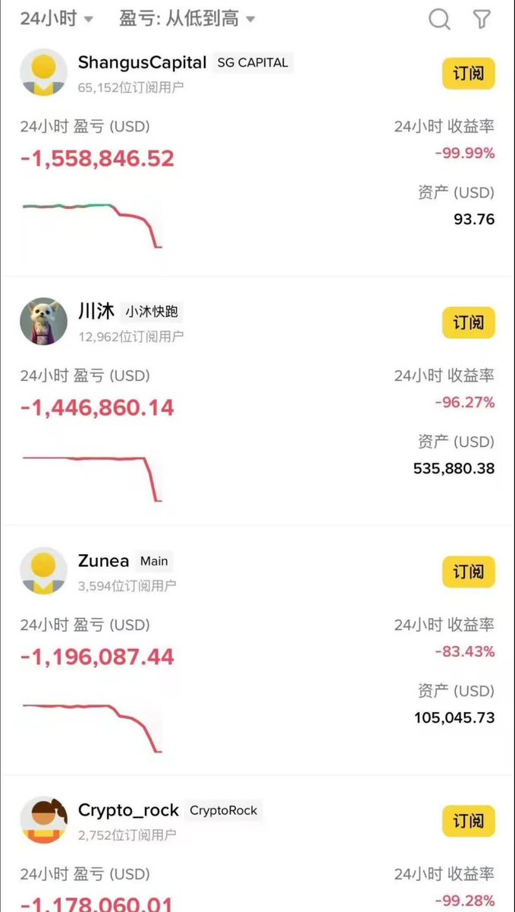
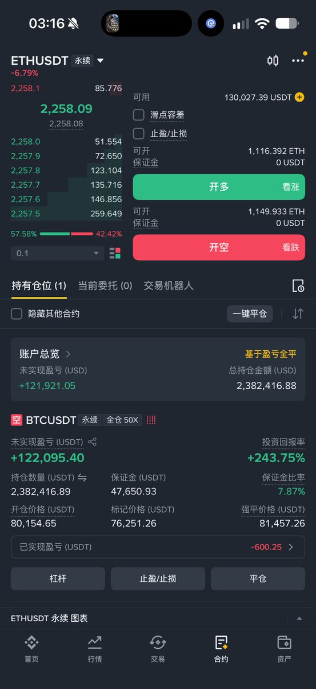
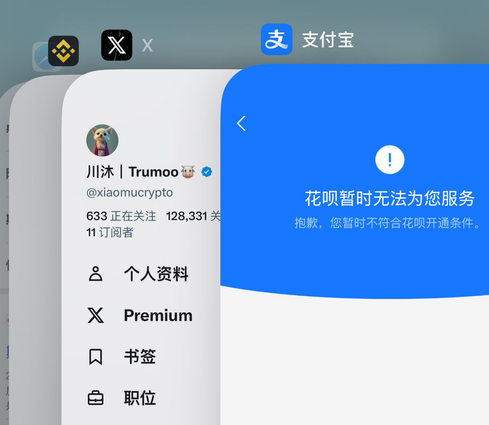

这节课只回答两个问题：交易到底在做什么，以及为什么大多数新手会亏钱。学完你应该能看懂一根K线、分清现货和合约、知道三种基本订单的区别，并且明白"先活下来"为什么是第一原则。
交易员原话来自 Trader-Archives 收录的公开推文；基础知识和统计数据来自监管机构、交易所官方文档和学术研究。本课程只用于学习，不构成任何投资建议。
一、交易到底是什么
交易就是用一个价格买入、另一个价格卖出，赚中间的差价。你赚的每一分钱，都来自另一个在错误价格买入或卖出的人，而对面很可能是比你更专业的机构、做市商和老手。
现货和合约
新手最先要分清的是这两种东西。资料库里大部分交易员做的是合约，但对新手来说，风险差别非常大。
| 现货 | 永续合约 | |
|---|---|---|
| 你买到的是什么 | 真实的币，可以提到自己钱包 | 一份跟踪价格的合同，没有币 |
| 能不能做空 | 不能 | 能 |
| 杠杆 | 没有 | 有，常见 1–125 倍 |
| 最坏情况 | 币价归零，但你可以一直拿着等 | 价格反向波动一点就可能被强平，保证金没了 |
| 额外成本 | 手续费 | 手续费 + 资金费率 |
做多是赌涨：先买后卖。做空是赌跌：先卖后买回来，只有合约才能做。
杠杆是拿一小笔钱当保证金，控制一大笔仓位。用 100 美元开 10 倍多单，控制的是 1,000 美元的比特币。价格涨 5%，你赚 50 美元，也就是本金的 50%；价格跌大约 9.6%，你的 100 美元就被交易所强制平仓（爆仓），一分不剩。
估算方法：逐仓做多时，强平价 ≈ 开仓价 × (1 − 1/杠杆倍数 + 维持保证金率)。10 倍约跌 9.6% 爆，20 倍约 4.6%，50 倍约 1.6%（按维持保证金率 0.4% 估算，各交易所不同）。
- 标记价格：交易所用来判断你是否爆仓的价格，不是你看到的最新成交价。
- 资金费率：多空双方定期互付的费用，让合约价贴近现货价。费率为正时多头付给空头，为负时反过来；币安多数合约每 8 小时结算一次。
三种基本订单
| 订单 | 怎么成交 | 好处 | 坑 |
|---|---|---|---|
| 市价单 | 立刻按当前最优价成交 | 一定能成交 | 行情快时可能以更差的价格成交（滑点） |
| 限价单 | 只在你定的价格或更好的价格成交 | 价格可控 | 价格没到就不成交，可能错过 |
| 止损单 | 价格碰到止损价后，变成市价单卖出 | 自动认错，不用盯盘 | 暴跌时成交价可能远低于止损价 |
美国 SEC 的投资者公告专门提醒过：止损单触发后会变成市价单，成交价可能大幅偏离止损价。用"止损限价单"可以控制价格，但暴跌时可能根本卖不掉。
一根 K 线在说什么
K 线把一段时间里的价格浓缩成四个数：开盘价、最高价、最低价、收盘价。
- 实体（粗的部分）：开盘到收盘。收盘比开盘高是阳线，反之是阴线。
- 影线（细的部分）：这段时间内到过的最高和最低价。长下影线说明价格曾跌下去又被买回来。
- 周期：一根日线 = 一天，一根 1 小时线 = 一小时。同一段行情换个周期看会完全不同。
国际和加密市场多数是绿涨红跌，A 股习惯是红涨绿跌。本课程用绿涨红跌。
二、新手为什么会亏
大多数做短线和加杠杆的普通人是亏钱的。这是监管机构和经济学家用真实账户数据算出来的。
| 研究 | 对象 | 结果 |
|---|---|---|
| 巴西日内交易研究（2020） | 2013–2015 年开始做期货日内交易的所有个人 | 坚持 300 天以上的人中 97% 亏钱，只有 1.1% 赚得比巴西最低工资多 |
| 欧盟 ESMA（2018） | 欧盟散户的杠杆差价合约（CFD）账户 | 74–89% 的账户亏钱，人均亏 1,600–29,000 欧元 |
| Barber & Odean（2000） | 美国 66,465 户股票账户 | 交易最频繁的一组年化 11.4%，同期市场 17.9% |
| FINRA 投资者教育基金会（2025） | 美国投资者问卷 | 听从金融网红建议的人中 72% 愿意投资一个明显的骗局，不用社交媒体投资的人是 42% |
巴西那篇论文还发现：没有"越做越会"的证据。光靠多交易、多交学费，并不会自动变好。
- 杠杆太高。价格正常波动一下就爆仓，连等到自己看对的机会都没有。
- 交易太频繁。手续费和滑点一点点吃掉本金，Barber & Odean 把原因归为过度自信。
- 死扛亏损、过早止盈。这叫"处置效应"：大家更愿意卖掉赚钱的、留着亏钱的。
- 用不该用的钱。借来的钱、生活费，一浮亏就慌，动作全变形。
- 跟着别人买。网红、喊单群、跟单，把决定交给别人，亏了也不知道错在哪。
真实例子：2025 年 10 月 10 日
美国宣布可能对中国加征 100% 关税后，加密市场出现了有史以来最大的一次强平：CoinGlass 统计 24 小时内约 191 亿美元的仓位被强平，超过 160 万个账户爆仓，其中约 167 亿是多单。
那一天比特币从最高 122,582 美元跌到最低 109,683 美元，跌幅约 10.5%（Bitstamp 现货）。在高点开 10 倍以上多单的人全部爆仓；拿现货的人账面亏了 10%，但还在场上。到"K线实操"里可以亲手重放这一天。
三、交易员怎么说：观点和交易记录
截图和自述都是交易员本人公开发布的，本课程没有办法独立核实。
观点 1：第一条规则是"别死"
0xWizard（2025-04-26，原推）的交易原则第一条：
第一，别死。不管成功率多高，回报率多好的策略，只要有归零可能性，就不做。
交易记录 · 无截图，本人自述 华尔街没有名字（2026-03-03，原推）：2018 年用合约把 1 个比特币做到 40 个，同年 11 月 16 日全部爆仓；之后重新开始，2021 年牛市套现 3,000 万买房；熊市里房子卖不掉，2023–2024 年两年都在想办法卖房，用他的话说是"腰斩 60% 去卖"。
新手怎么理解：老手讲的第一件事不是怎么赚钱，而是怎么不被淘汰。一次归零就能抹掉好几年的盈利。
观点 2：杠杆面前，高手也会一天亏光
交易记录 · 有截图 川沐（2025-10-11，原推）在 10.10 大爆仓后上了带单平台的"24 小时亏损榜"：24 小时亏损 1,446,860 美元，收益率 −96.27%。排在他前后的账户也都亏了 83% 到 99.99%。

熬鹰（2024-12-11，原推）的一句话正好是反面：杠杆率低于 1 就没有爆仓价。
新手怎么理解：合约本身不等于高风险，高杠杆才是。1 倍及以下的合约和现货风险差不多；开到 10 倍、20 倍，一次黑天鹅就能清零。
观点 3：看对不重要，做对才重要
交易记录 · 有截图 熬鹰（2026-11-05，原推）公开了两笔止损：ETH 空单亏约 30 万美元，美光（MU）多单亏约 29 万美元。他说这两单只要不止损，当天就会爆仓。

顺便学会看持仓界面：同一条推文的另一张截图是一个 BTC 空单，全仓 50 倍，开仓价 80,154.65，强平价 81,457.26。价格往上走 1.6%，这笔仓位就没了。他能这样做靠的是严格止损和多年经验，新手照抄这个倍数就是送钱。

新手怎么理解：职业交易员也经常看错，区别在于错了立刻认。止损是花钱买保险，不是失败。
观点 4：别用借来的钱，赚了要套现
交易记录 · 有截图 川沐（2025-03-07，原推）回忆自己借网贷亏完，是姐姐拿出工资帮他还的；配图是他的花呗至今仍显示"暂时无法为您服务"。他总结的教训：赚钱一定要套现，资金要分散，不要给自己一次性全部梭哈的机会。

熬鹰也多次提到，他从小资金做起时背过网贷，并劝所有人别借网贷做合约，只用亏光也不影响生活的钱。
新手怎么理解：用借来的钱交易，你亏的不只是本金，还有信用和家人的钱。赚到了的时候，只有提现到银行卡的部分才真的属于你。
观点 5：别跟单，你看到的都是幸存者
熬鹰（2025-06-05，原推）：别成为熬鹰，成为你自己，一定别跟单。另一条（2025-07-20，原推）说几位老粉丝在牛市里亏到破产、抵押了房车，并提醒：交易神话会得到所有人的关注，亏完的人总是悄无声息地退出。
新手怎么理解：这就是幸存者偏差。你在推特上、在这个资料库里看到的，全是还在场上的赢家。学交易员的思路可以，照抄他们的仓位和杠杆不行。
四、新手最常犯的错（自查清单）
勾选你犯过的。勾得越多，越要先从现货和小金额开始。
五、课后作业
先去"K线实操"做完四个练习，然后用一句话回答自己：如果今天就要开始交易，我会用现货还是合约？用多少杠杆？亏多少就停？把答案写下来，第二课讲仓位管理时会用到。
来源
- 交易员原推经 Trader-Archives 整理（梭哈.AI 维护），链接见各观点
- 美国 SEC：Types of Orders、Stop, Stop-Limit, and Trailing Stop Orders
- FINRA：Understanding Order Types
- 币安：Introduction to Binance Futures Funding Rates
- Odean：Are Investors Reluctant to Realize Their Losses?
- 10.10 强平事件：CoinGecko、Decrypt
- 行情数据：Bitstamp BTC/USD 1 分钟数据，ff137/bitstamp-btcusd-minute-data